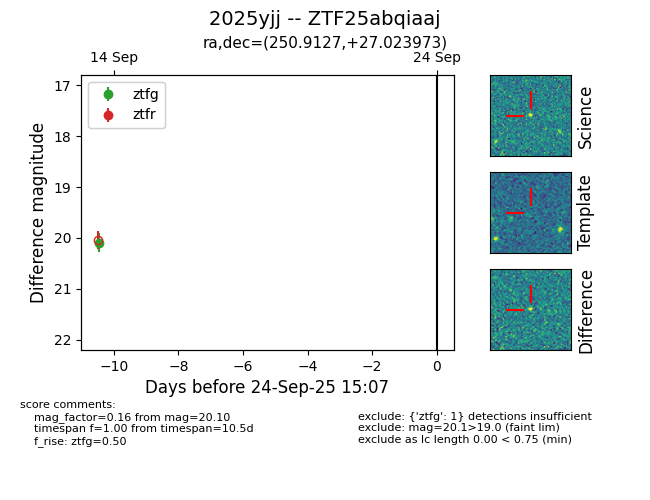

FINK: ZTF25abqiaaj
Lasair: ZTF25abqiaaj
ALeRCE: ZTF25abqiaaj
TNS: 2025yjj
YSE: 2025yjj
ZTF25abqiaaj (ztf,fink)
2025yjj (tns,yse)
equatorial (ra, dec) = (250.9127,+27.02397)
galactic (l, b) = (47.0019,+38.80604)

last ztfg=20.10
1 ztfg detections